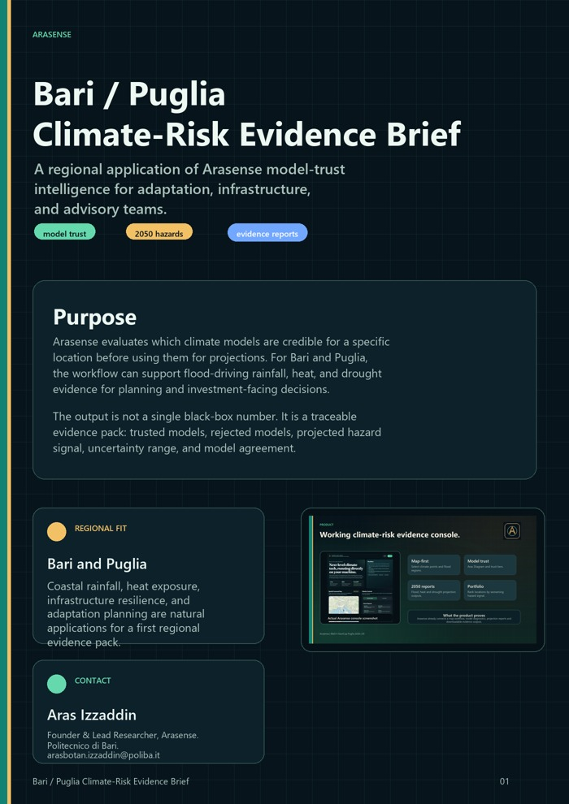

Arasense
Arasense
Select locations
Define Bari city points, coastal zones, infrastructure assets, municipalities, or a small portfolio of sites.
Arasense applies model-trust intelligence to Bari and selected Puglia locations — translating climate-model uncertainty into evidence for flood-driving rainfall, heat, and drought decisions.

Model-trust diagnostics and mid-century projections for indicators such as maximum 1-day precipitation.
Temperature indicators for adaptation planning, infrastructure stress, and heat-risk communication.
Dry-day indicators for regional screening and comparison across selected locations.
Define Bari city points, coastal zones, infrastructure assets, municipalities, or a small portfolio of sites.
Compare each model's history against observations and decompose the error with the Aras Diagram.
Use skill-weighted models to estimate rainfall, heat, and drought signals — with uncertainty and agreement shown.
Deliver a concise report with trusted models, rejected models, hazard signal, interpretation, and method notes.
| Example | Signal | Why it matters |
|---|---|---|
| Bologna rainfall | +14.2% max 1-day rainfall by mid-century | Full-ensemble screening, trust weighting, uncertainty, and model agreement. |
| Italian portfolio | Rome ranks highest of five cities | Locations ranked by worsening flood-driving rainfall signal. |
| Aras Diagram | Peer-reviewed evaluation method | A transparent basis for explaining which models are trusted and why. |
See the full case studies for the complete tables and interpretation.
Arasense is available for guided briefings, pilot studies, and selected collaborations with public-sector, infrastructure, advisory, and research partners.